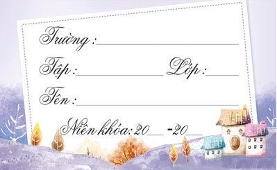
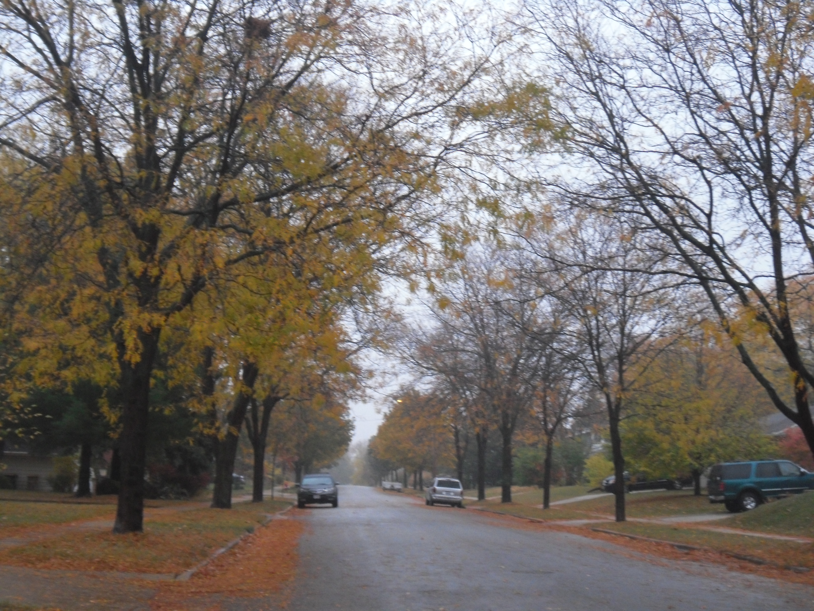
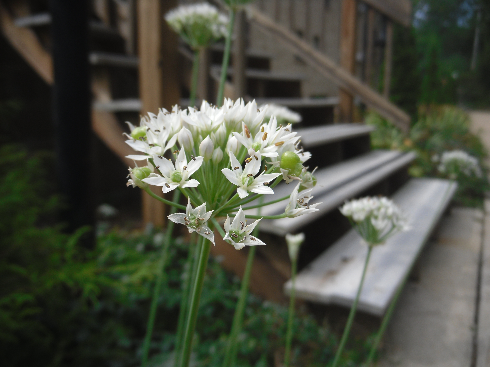
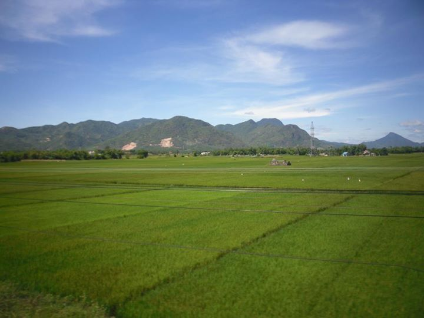

Phần thưởng học sinh giỏi năm lớp 9 là một rôm vở 20 quyển. Thi vào lớp 10 ở trường huyện rồi, ở chuyên Quảng Nam cũng đậu rồi. Nhưng ước mơ vào Lê Quý Đôn cứ cháy bỏng trong lòng, tựa như gì đó gần gũi mà cũng xa xôi lắm. Gần gũi vì ngay trong tủ, bên cạnh chồng vở, có mẩu báo CAĐN giới thiệu về thi tuyển sinh LQĐ. Còn xa xôi, ừ, thì xa thiệt. Ở vùng quê này thì Đà Nẵng vẫn là chỗ nào đó xa lắm.

Ôn thi vào LQĐ căng thẳng. Bao nhiêu lần đi thi này kia rồi mà lần tới đây khác lắm. Ước mơ sao lớn quá. Lâu lâu mở tủ sách ra, đọc lại mẩu báo viết về ngôi trường đó. Bấy nhiêu từ chớ mấy mà đọc đi đọc lại không chán: “đồng phục xanh da trời”, “bên bờ sông Hàn”. Không chịu ngồi yên, mình lấy một quyển vở trong phần thưởng, lật ra trang bìa, ghi tên mình vào đó - nắn nót tỉ mỉ từng chữ một:
Trường: THPT Chuyên Lê Quý Đôn, Tp. Đà Nẵng
Lớp: 10
Năm học: 2006-2007
Giờ nghĩ lại, biết đâu năm đó mà rớt LQĐ chắc cái bìa vở đó đã mãi ngồi trong tủ sách
Nhưng không. Tháng sau, trên chuyến xe khách buổi sáng sớm về Đà Nẵng, cuốn vở với cái bìa thân thương đó nằm ngay ngắn trong cặp xách mới của cậu học trò nhỏ. Cặp xách trên vai gói gọn một ước mơ đã thành sự thực. Ừ, sáng đó, LQĐ nhập học lớp 10 mà.
--
Cảm ơn mái trường - nơi những năm tháng đó đã cho ta bao yêu thương và trưởng thành


Nhãn Tên
Ghi chép dọc đường [Tập 1]
6 giờ chiều thứ Bảy, học bài xong, trời vẫn còn chút ánh sáng của buổi chiều nhưng chưa tối hẳn. Thêm chiếc áo khoác và găng tay ấm vào, ta rảo bước chân trên những con đường nhỏ quanh nhà. Cứ cuối tuần lại tự thưởng cho mình nữa tiếng đi dạo quanh quanh, tuần nào cũng vậy, vừa tập thể dục vừa ngắm cảnh vật xung quanh. Tiết trời cuối thu se se lạnh với mưa bụi cứ tưởng như sương mù. Hàng cây hai bên đường đã khô trơ cành còn níu lại vài chiếc lá vàng - hệt như đoạn văn của Thanh Tịnh ngày nào: “Hằng năm cứ vào cuối thu, lá ngoài đường rụng nhiều và trên không có những đám mây bàng bạc…”

Năm thứ 7 đi học xa nhà. Đã qua lâu rồi cảm giác nhớ nhà “náo nức” như hồi mới ra ĐN học. Giờ đã trưởng thành hơn nhiều. Nhưng quê hương vẫn cứ ở trong lòng. Gặp cụ già Mỹ lom khom bước lên xe buýt ta nhớ về nội. Thấy khóm hoa đồng tiền trong sân trường y như những hoa cỏ mà ngày bé rong ruổi trên ruộng đồng quê. Ăn chiếc bánh trung thu đem từ VN qua như thấy cả tuổi thơ với tiếng múa lân xập xình và lồng đèn lấp lánh. Dạo bộ buổi chiều tối, vài ngôi nhà đã lên đèn và mùi đồ ăn thơm thoang thoảng làm ta nhớ những bữa cơm gia đình ở nhà. Không ngờ giữa đất nước xa xôi cách VN đúng nữa vòng trái đất ta lại gặp những điều thân thuộc đến vậy.

Vậy là đã hơn 1 tháng trên đất nước mới mẻ này. Tiểu bang Wisconsin không đồ sộ hay sầm uất với những tòa nhà chọc trời như New York mà ngược lại là bang nông nghiệp của Mỹ. Dọc đường xe buýt đến trường là rừng cây um tùm lá và những đồng cỏ xa tít chân trời. Giữa mênh mông của làng quê như vậy là một trường đại học danh tiếng đã hơn 150 tuổi. Những buổi chiều học xong sớm, ta lại dạo quanh sân trường chẳng để làm gì chỉ dạo vậy thôi. Cảm giác y hệt như đi lạc giữa những tòa lâu đài cổ kính uy nghi mà thuở nhỏ đã từng xem trên Tivi. Những cánh cửa gỗ chạm khắc cả bức tranh lịch sử của thành phố. King...Kong...Đâu đó từ xa một tiếng chuông nhà thờ vang lên ngân nga khắc khoải...Giữa sân trường, các bạn Mỹ chơi bóng, góc sân kia dưới bóng cây có mấy bạn khác đang túm tụm học bài, nhóm khác lại lim dim nằm phơi nắng trên bãi cỏ. Thấy vui, ta cũng nằm thử trên bãi cỏ ngắm trời thu trong vắt và mát rượi. Tự hỏi cảnh vật đẹp hay là lòng ta phấn khởi...
Ghi chép dọc đường [Tập 2]
1. Cuối tuần chuẩn bị qua nhà anh Vũ ở gần nhà có buổi tiệc nhỏ mừng anh Quốc sắp ra trường đã có việc ở Wal-Mart. Buổi ăn tối có đông đủ các anh chị người Việt ở xung quanh thị trấn nhỏ này. Người đi làm. Người đi dạy. Người học Tiến sỹ. Người đang là sinh viên - là "cây bút trẻ" đang viết bài này. Mỗi một miền quê của Việt Nam góp nhặt căn phòng khách đủ thứ tiếng của ba miền: Bắc-Trung-Nam. Y chang cái lúc với "hội Quảng Nam" nhỏ nhỏ ngày xưa ở góc sau bệnh viện Sơn Trà. Mới gặp đôi lần mà sao thấy thân thương như quen lâu rồi. Chắc tại mấy hôm đi học ở trường chưa bao giờ được nghe nhiều tiếng Việt đến vậy. Trường ít người Việt đến nỗi có chiều đi giữa sân trường đông đúc, chợt "thèm" chút tiếng Việt, ta nghêu ngao câu hát: “Một chiều đi trên con đường này, hoa điệp vàng trải dưới chân tôi…” Nghêu ngao hát như ca sỹ đường phố mà chẳng ngại gì hết vì hát có dở hay gì người ta xung quanh cũng chẳng hiểu.
2. Quay lại với bữa tiệc nho nhỏ buổi chiều tối. Cả phòng khách cứ nói đủ chuyện rôm rang chẳng ăn nhập gì với nhau giống như lớp cấp 2 mình mỗi hồi 15 phút đầu giờ. Lạnh 0 độ ở ngoài trời mà trong nhà nghe cứ ấm cúng như ngày Tết ở nhà. “Tâm-điểm-của-sự-chú-ý” chính là mấy em bé bò bụ bẫm giữa sàn nhà hoặc là oe oe trên tay mẹ. Có mấy anh chị lớn đã có gia đình và mới sinh em bé. Tên của mấy bé cũng là một câu chuyện nữa. Bé tên “Mây” đậm chất Việt; bé tên "Julia", nghe giống diễn viên nào trên Hollywood. Cái tên nào cũng hồn nhiên như khuôn mặt tròn trĩnh của các bé nhưng mình vẫn thích tên Việt hơn vì nghe gần gũi. Tên Việt còn để nội ngoại dễ gọi tên nữa chứ - ông bà sao biết tiếng Anh như bố mẹ các bé được, đúng không? Ở bên này, em bé nào sinh ra ở đây đều được là công dân Mỹ. Đơn giản nhỉ, ừ chỉ vậy thôi. Các em bé được sinh ra ở Mỹ, uống sữa trên đất nước này, rồi sẽ đến trường bằng tiếng Anh và tuổi thơ của các em sẽ là Harry Potter chứ không còn là cô Tấm chị Cám. Rồi ham-bơ-gơ sẽ thay thế bánh tráng dừa như trong tuổi thơ của bố mẹ các bé. Kí ức của bố mẹ các bé là lũy tre làng, là đồng lúa chín. Và là cánh cò bay hoài không nghỉ từ xứ xở quê hương tới đất nước xa xôi... Liệu mai này các bé có chút nào thương cái xứ xở trong kí ức bố mẹ các bé chăng?
3. Giờ kết bài bằng câu chuyện khác của cuộc sống bên này đó là chuyện nấu ăn. Quảng cáo nào đó trên Ti-vi có câu: “Nấu ăn là nghệ thuật và người đầu bếp là nghệ sỹ.” Hồi hết lớp 9, sợ nhất khi ra ĐN là ko biết nấu ăn. Thiệt ra cũng biết nấu nước sôi, nấu cơm và mì tôm từ nhỏ nhưng lẽ nào 3 năm LQD sắp tới chỉ có 3 món đó thôi ăn sao cho lớn nổi? Vậy mà giờ đây ta nấu cơm 100% cho mọi bữa ăn. Ai ngờ nấu cũng được. Đa dạng, từ canh, xào, luộc rau đến kho cá, thịt. Đủ 3 tiêu chí: Ngon, Bổ, Rẻ. Kiên trì gần như không thiếu bữa nào. Tiết kiệm được một mớ so với đi ăn tiệm. Trưa đi học ở lại trường thì đem cơm theo trong cặp. Có hôm đi học trễ chạy tới chạy lui làm đổ đồ ăn trong cặp, mấy trang giấy nháp giờ vẫn còn "thơm" mùi nước mắm. Nhưng cuối cùng cũng đã nghĩ ra chiêu đựng mới: bằng túi nilon; từ đó giờ không đổ nữa. Trưa học xong đói thì ăn luôn khỏi hâm lại. Hôm nào rảnh rỗi thì chạy lại phòng ăn sinh viên có lò vi sóng hâm chút cho ấm cơm rồi ăn. Tới đó có ai ăn nữa ngồi chung cho vui. Thỉnh thoảng lại có nhóm bạn Trung Quốc hay đem cơm theo ăn. Chẳng quen biết gì, ăn chung bàn riết rồi thành bạn.
Kể ra cũng vui. Sau này về Singapore nhất định phải đem theo cái thói quen nấu nướng này về mới được.